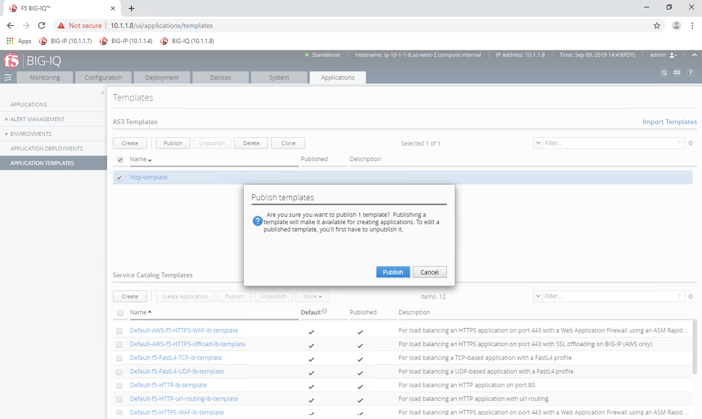

3.2.1. Using AS3 with BIG-IQ 7.0¶
With BIG-IQ version 7.0 we can upload AS3 templates to the BIG-IQ with Postman. In the BIG-IQ GUI we can set values (IP addresses, ports, Tenant name) and then send that AS3 template to a target BIG-IP (10.1.1.7 for this lab).
3.2.2. View BIG-IQ Without AS3 Templates¶
- Open Chrome and navigate to the bookmark titled “(BIG-IQ 10.1.1.8)”.
- Login to the BIG-IQ: username = admin, password = GoodBaklava123@
- Click the Applications tab. In the left menu bar, select Application Templates.
- Notice above that AS3 Templates is empty.
3.2.3. Import Postman Collection from GitHub¶
- Open the Postman application on the Windows desktop.
- Turn off “SSL certificate verificattion” by going to “File” in the top right, selecting “Settings” from the dropdown and in “General” turning off the “SSL certificate verificattion” button.
4. Use the Postman Import feature to import the pre-made Postman Collection. To do this: (1) Click the Import button. (2) Click Import from Link. (3) For the Postman Collection, paste in the following and (4) click Import.
https://raw.githubusercontent.com/jaustinf5/postman_collection/master/BIG-IQ 7.0 Collection.postman_collection.json
- Once imported, you will be able to see the Postman Collection “BIG-IQ 7.0 Collection” as seen below.
3.2.4. Send AS3 Templates to BIG-IQ with Postman¶
Note
The declarations titled “AS3-F5-*-big-iq-default” are requests made by F5 that work with BIG-IQ 7.0.
When we send the declaration, the template will be stored on the BIG-IQ.
- Click into “BIG-IQ 7.0 Collection” and open the request, “Authenticate to BIG-IQ”.
- Open the “Body” tab to view the JSON declaration as seen below.
- To send this declaration to the URI “https://10.1.1.8/mgmt/shared/authn/login” click the blue “Send” button on the right.
- Ensure that the response is 200.
* If error: “Invalid registered claims.”, the token has expired. Resend “Authenticate to BIG-IQ” request to fix.*
- Click into the request “AS3-F5-HTTP-lb-template-big-iq-default”. Open the “Body” tab to view the JSON declaration.
- Click the blue “Send” button on the right. Ensure that response is 200.
3.2.5. Create an Application with an AS3 Template in BIG-IQ¶
- Open Chrome and navigate to the bookmark titled “BIG-IQ (10.1.1.8)”.
- Login to the BIG-IQ: username = admin, password = Admin123@
- Click the Applications tab. In the left menu bar, select Application Templates. Now you will see your uploaded template.
3. Publish the template by checking the box next to the template name and then clicking “publish”. When you receive the pop-up, click the blue “Publish” button.
- In the left menu bar, select Application and select the “Create” button.
- Enter an “Application Name”. Here I’ve named mine, “app_made_by_as3_template”.
- From the “Template Type” dropdown, select our imported template.

- For the “General Properties” section, enter similar information. For “Target”, make sure to select the corresponding hostname to 10.1.1.7 from the dropdown
- For the “Pool” section, add “10.1.10.13” in “Server Addresses”
- For the “Service_HTTP” section, add “10.1.20.50” in “Virtual addresses”.

- Click the blue “Create” button. The page will load to below.
3.2.6. View Created Application on BIG-IP (10.1.1.7)¶
- Open a new tab in Chrome
- Open Chrome and navigate to the bookmark titled “(BIG-IP 10.1.1.87)”.
- Login to the BIG-IQ: username = admin, password = admin
- Change partition to your new partition.
- Open Local Traffic –> Network Map
- Open a new tab and enter the VIP 10.1.20.50 in the browser to view the app.
Note
End of the lab.